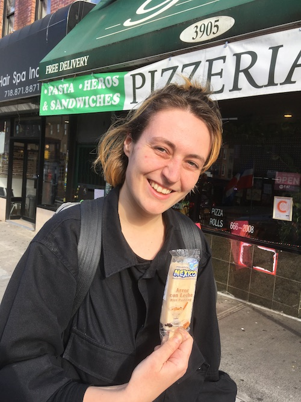

03.11.2020
supermarket special: agnes and louis in sunset park
Louis came to visit from the UK! At a crazy time! Having stopped getting the subway at that point, we took a walk to sunset park to enjoy the supermarkets. In particular, we were there to visit the wonderful
Fei Long Supermarket, a temple to nice things in jars and posessed of 4 self-serve
tripe buckets, each filled with a different stomach. (been getting into tripe lately, but more on that in later posts. i go for
'book tripe', if anyone's curious)
It's a long walk there from our house though, so we stopped on the way into a Mexican corner shop at the bottom corner of Evergreen cemetary. I picked up some corn husks (to make tamales, as per the last post), but we were also thrilled to find arroz con leche ice lollies in the freezer!
Frozen rice pudding on a stick is great: who knew! They were filled with a generous dusting of raisins and cinnamon... pleasantly chalky, not too sweet. Really really good.
